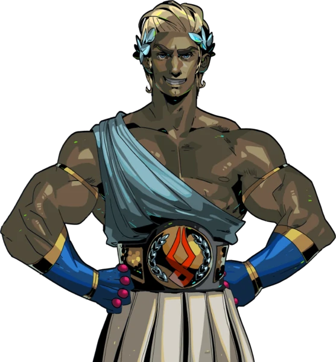
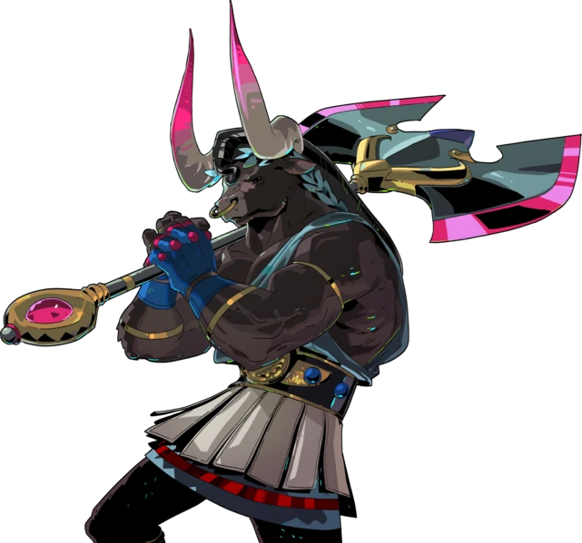

Theseus
Theseus is known as the "Hero of Athens." He is most known for killing the Minotaur. He is a cocky and confident man who fights with his trusty spear and shield.
Asterius
Asterius is known as the "Bull of Minos" and was killed by Theseus. He is calm and analytic, the opposite of Theseus' personality. Asterius fights with his huge axe and alongside Theseus.